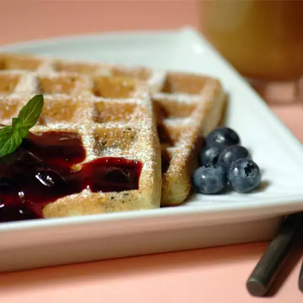

Blueberry Waffle

A waffle with blueberry sauce and mint garnish
Ingredients
Waffle:
- 1 ⅔ cups milk
- 3 large eggs, separated, divided
- 2 cups all-purpose flour
- 2 ¼ teaspoons baking powder
- ½ teaspoon salt
- ¼ cup unsalted butter, melted
- 2/3 cup blueberries
Sauce:
- 1 1/2 cups blueberries
- 3 tbsp honey
- 3 tbsp honey
- 1 tbsp cornstarch
Steps
-
Make the waffles: In a medium bowl, whisk together milk and egg yolks.
Stir in flour, baking powder, and salt. Stir in melted butter and let
stand for about 30 minutes.
-
Lightly grease and preheat a waffle iron according to the manufacturer's
instructions.
-
Beat egg whites in a glass, metal, or ceramic bowl until stiff. Fold
into batter with blueberries.
-
Working in batches, scoop portions of the batter onto the preheated
waffle iron. Cook each waffle until golden brown and the iron stops
steaming, 4 to 6 minutes.
-
Meanwhile, make the sauce: Stir blueberries, 1/4 cup orange juice, and
honey together in a medium saucepan over medium heat. Bring to a boil.
-
Mix remaining 1/4 cup orange juice and cornstarch together in a small
bowl; stir into the blueberry mixture. Cook, stirring constantly, until
thickened. Serve warm over waffles.